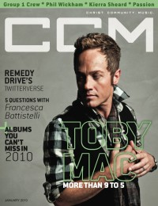

Toby McKeehan
|  January 2010 CCM Digital |
 September 2012 CCM Digital |
 15 August 2015 CCM Digital |
Media coverage:
- May 1995 in CCM "Integrity and Christian Music: All In The Family", by Mark A Smeby
- Mar 1996 in CCM "Erasing Racism", by Todd Hafer
- Jul 1996 in CCM "In The News: Artists, Pastors and Industry Leaders Discuss Issue of 'Fame and Ministry'"
- May 1998 in CCM "Backstage: Songwriting: Tools of the Trade", by Lou Carlozo
- Oct 1998 in CCM "A Father To Be", by April Hefner
- Jul 1999 in CBA Marketplace "News Item: 40 Records Launches", by Jamie Lee Rake
- Jul 1999 in CCM "On The Beat: Culture Clash: Gaither, McKeehan unite to form modern worship music label", by Melissa Riddle
- Apr 2000 in CCM "'Jesus' Music", by Dave Urbanski
- 8 Jan 2001 in Christianity Today "What Rap Does Right"
- May 2001 in CCM "O Brothers, Where Art Thou?", by April Hefner, Gregory J. Rumburg, Melissa Riddle
- May 2001 in CCM "To The Extreme", by Gregory J. Rumburg
- May 2001 in CCM "Music Without Walls", by Lou Carlozo, Lindy Warren, Gregory J. Rumburg
- Sep 2001 in Campus Life "Still Going Strong", by Mark Moring
- Oct 2001 in CCM "10 Questions With: Toby McKeehan", by Gregory J. Rumburg
- Aug 2002 in Charisma & Christian Life "Get Ready For The Hip-hop Revolution", by Adrienne S Gaines
- Jun 2003 in CCM "The Fast and Fabulous World of TobyMac", by Brian Quincy Newcomb
- Jun 2003 in CCM "Can Tobymac Save Christian Music?", by Christina Farris
- Jul 2003 in Charisma & Christian Life "Solo Act", by Chad Bonham
- Jul 2003 in CCM "25 Powerful People Who Have Made Christian Music What It Is Today: Toby McKeehan"
- Nov 2003 in URBAN "Dream Catchers", by Debra Akins
- Win 2004 in URBAN "Inside Track", by Jessica Robin
- Jan 2004 in CCM "2004 Reader's Choice Awards: Mac Attack"
- Jan 2004 in CCM "2004 Reader's Choice Awards: Deja Vu"
- Win 2004 in URBAN "Inside Track: TobyMac's Upcoming CD", by Jessica Robin
- May 2004 in CCM "'x' Things You Probably Didn't Know About...: TobyMac", by Michael Nolan
- Jul 2004 in CCM "Standing Room Only: Third Day Live! Tour", by Andy Argyrakis
- Sep 2004 in CCM "The Life and Times of TobyMac", by Christina Farris
- Nov 2004 in HM "TobyMac", by David Allen
- Nov 2004 in Group "Culture: Ministry and Media: TobyMac", by Bryan Belknap
- Jan 2005 in Campus Life "The Making of a Jesus Freak", by Todd Hertz
- Jan 2005 in New Man "Guy Gear: The Iron Chef of Gospel Hip Hop", by Chad Bonham
- Apr 2005 in Christian Single "Featured Artist: TobyMac", by Andy Argyrakis
- Aug 2005 in CCM "Plain White Rappers"
- Sep 2005 in Prism "Singing For Change", by Linda Owen
- Apr 2006 in CCM "!Hip-Hop", by Andree Farias
- Aug 2006 in CCM "Insider: Keynote Freaker"
- Feb 2007 in CCM "Poets, Preachers & Prophets", by John J. Thompson
- Mar 2007 in CCM "Rhythm Scene Investigation", by Andree Farias
- May 2007 in CCM "Portable Sound Boarding: The Reconciliation of TobyMac", by Douglas Kaine McKelvey
- May 2007 in CCM "Tobymac's Rap Sheet"
- May 2007 in Group "Culture: Ministry and Media: TobyMac", by Scott Firestone IV
- Sep 2007 in New Man "The Big Mac", by Chad Bonham
- Apr 2008 in CCM "TobyMac", by Matthew West
- Apr 2008 in CCM "Tour Scrapbook: TobyMac, Jeremy Camp, Matthew West", by Andy Argyrakis
- Jun 2008 in Ignite Your Faith "TobyMac's Secret Recipe"
- Jan 2010 in CCM Digital "All In A Day's Work", by Andrea Bailey Willits
- Jan 2010 in CCM Digital "Tour Mate Trivia"
- Mar 2010 in Group "Ideas: Ministry and Media: TobyMac", by Scott Firestone IV
- Apr 2010 in CCM Digital "Just Sayin' Tour Spotlight: Awake Tonight Tour, Aurora Christian School, Aurora, IL", by Andy Argyrakis
- Oct 2010 in CCM Digital "Mission Matters: Make a Difference Tour: Max Lucado, Michael W. Smith, Third Day, TobyMac", by Caroline Lusk
- Jul 2011 in CCM Digital "Black and White: Race, Diversity, Ministry, Music", by Caroline Lusk
- Dec 2011 in CCM Digital "Musicians Corner: Story Behind the Song: David Crowder, Matthew West, TobyMac"
- Apr 2012 in HM "Hardnews: TobyMac Takes Up Remix"
- Sep 2012 in CCM Digital "Focused", by Caroline Lusk
- Nov 2012 in Relevant "The Drop: TobyMac's Album Reaches Nu Heights"
- 1 Feb 2014 in CCM Digital "Tour Spotlight: Hits Deeper Tour, Sears Center, Hoffman Estates, IL", by Andy Argyrakis
- 15 Jun 2014 in CCM Digital "Gotee Records Celebrates 20 Years", by Matt Conner
- 15 Aug 2015 in CCM Digital "What Love Feels Like", by Lena Ziegler
- 15 Aug 2015 in CCM Digital "Reuniting with dcTalk"
- 15 Dec 2015 in CCM Digital "Concert Review: TOBYMAC Continues To Set The Standard For Christian Music's Live Show - Performs Poignant NYC Tour Date Hours After Paris Attacks", by Justin Sarachik
Albums & reviews:
2001: Momentum
- Dec 2001 in CCM, by Lou Carlozo
- Jan 2002 in YouthWorker, by Dave Urbanski
- Jan 2002 in HM, by Treble Bandoppler
- Mar 2002 in Christian Single, by Lou Carlozo
2003: Re:mix Momentum
- Aug 2003 in CCM, by Anthony DeBarros
- Sep 2003 in YouthWorker, by Dave Urbanski
2004: Welcome to Diverse City
- Nov 2004 in YouthWorker, by Dave Urbanski
- Nov 2004 in CCM, by Anthony DeBarros
- Nov 2004 in Worship Leader
- Mar 2005 in Living With Teenagers, by Joy Fisher
- Apr 2005 in Christian Single, by Andy Argyrakis
2007: Portable Sounds
- Mar 2007 in CCM, by Christina A. Banister
- Mar 2007 in YouthWorker
- Mar 2007 in Christian Music Planet, by Anthony Barr-Jeffrey
- Apr 2007 in Charisma & Christian Life, by Elisabeth Burns
- May 2007 in HM, by Brian Quincy Newcomb
- May 2007 in Today's Christian Woman
- May 2007 in Worship Leader
- May 2007 in New Man, by Chad Bonham
- 2007 in Christian Rock Report, by Bradford Coleman
- Jun 2007 in Living With Teenagers, by Joy Fisher
2008: Alive and Transported
- Jul 2008 in HM, by Dan MacIntosh
- Jul 2008 in Worship Leader
- Oct 2008 in Living With Teenagers, by Randy Williams
2011: Christmas in Diverse City
- Nov 2011 in Worship Leader, by Jeremy Armstrong
- Dec 2011 in Christianity Today, by Ted Olson
- Dec 2011 in Charisma
- Dec 2011 in CCM Digital, by Grace S. Aspinwall
2015: This is Not a Test
- 1 Aug 2015 in CCM Digital, by Andy Argyrakis
- Sep 2015 in Worship Leader, by Jay Akins
- 1 Jan 2016 in CCM Digital, by Andy Argyrakis
2016: Hits Deep Live
2017: Light Of Christmas
2020: The Lost Demos - EP
2022: Live In Denver
2025: Heaven on My Mind
Award Summary (Nominations / Wins)
Dove Awards- 1996 Dove Awards
- Song: "Jesus Freak"
- Song: "Between You And Me"
- Songwriter
- Songwriter
- Producer
- Songwriter
- Producer
- Song: "Consume Me"
- Short Form Music Video: "Extreme Days"
- Rock Recorded Song: "Extreme Days"
- Rap/Hip Hop/Dance Album: Momentum
- Rap/Hip Hop/Dance Recorded Song: "Somebody's Watching Me"
- Producer
- Artist
- Short Form Music Video: "Irene"
- Long Form Music Video: Momentum [Video]
- Rap/Hip Hop/Dance Recorded Song: "Irene"
- Rap/Hip Hop/Dance Recorded Song: "J-train"
- Modern Rock/Alternative Recorded Song: "Get This Party Started"
- Rock Recorded Song: "Get This Party Started"
- Rap/Hip Hop Recorded Song: "Love Is In The House"
- Rap/Hip Hop Album: Welcome to Diverse City
- Rock Recorded Song: "The Slam"
- Artist
- Song: "Made To Love"
- Male Vocalist
- Artist
- Short Form Music Video: "Boomin'"
- Rock/Contemporary Album: Portable Sounds
- Artist
- Long Form Music Video: Alive and Transported
- Artist
- Short Form Music Video: "Lose My Soul"
- Pop/Contemporary Recorded Song: "City On Our Knees"
- Song: "Get Back Up"
- Artist
- Pop/Contemporary Recorded Song: "Get Back Up"
- Rock Recorded Song: "Showstopper"
- Rock/Contemporary Recorded Song: "Tonight"
- Rock/Contemporary Album: Tonight
- Recorded Music Packaging: Christmas in Diverse City
- Christmas Album: Christmas in Diverse City
- Songwriter
- Pop/Contemporary Album: Eye On It
- Artist
- Recorded Music Packaging: Eye On It
- Short Form Music Video: "Eye On It"
- Short Form Music Video: "Speak Life"
- Pop/Contemporary Album: This is Not a Test
- Artist
- Contemporary Christian Artist
- Artist
- Short Form Music Video: "Bring On The Holidays"
- Long Form Music Video: Hits Deep Live
- Song: "I just need U."
- Songwriter
- Short Form Music Video: "I Just Need U"
- Pop/Contemporary Recorded Song: "I Just Need U."
- Contemporary Christian Artist
- Christmas / Special Event Album: Light Of Christmas
- Song: "Everything"
- Pop/Contemporary Album: The Elements
- Artist
- Contemporary Christian Artist
- Contemporary Christian Artist
- Short Form Music Video: "Help Is On The Way (Maybe Midnight)"
- Long Form Music Video: Live In Denver
- Short Form Music Video (Concept): "Promised Land"
- 2002 Grammy Awards
- Best Rock Gospel Album: Momentum
- Best Rock Gospel Album: Welcome to Diverse City
- Best Pop/Contemporary Gospel Album: Portable Sounds
- Best Gospel Song: "Made To Love"
- Best Rock or Rap Gospel Album: Alive and Transported
- Best Gospel Song: "City On Our Knees"
- Best Pop/Contemporary Gospel Album: Tonight
- Best Contemporary Christian Music Song: "Hold Me"
- Best Contemporary Christian Music Album: Eye On It
- Best Contemporary Christian Music Song: "Speak Life"
- Best Contemporary Christian Music Album: This is Not a Test
- Best Contemporary Christian Music Performance/Song: "Feel It"
- Best Contemporary Christian Music Album: The Elements
Books about Toby McKeehan
- "Thunderbolts and Lightning: The Writing of Music for God" in Soul2Soul (Christopher L Coppernoll, 1998).
- "Toby Mac" in The Encyclopedia of Contemporary Christian Music (Mark Allan Powell, 2002).
- "dc Talk" in The Encyclopedia of Contemporary Christian Music (Mark Allan Powell, 2002).
- Chapter also includes: dc Talk, Kevin Max Smith, Michael Tait.
- "Testimonies: Interviews With Christian Artists" in The Billboard Guide to Contemporary Christian Music (Barry Alfonso, 2002).
© 2011 CMnexus. Last updated May 2025. Contact: editor -AT- cmnexus -DØT- org